Pckt に新しい PDS レジストリを作る

AT Protocol (以降 atproto) ベースのブログサービスに pckt (@pckt.blog) というのがある。 先日紹介した Leaflet と同じく standard.site Lexicon に基づいた構成になっている。
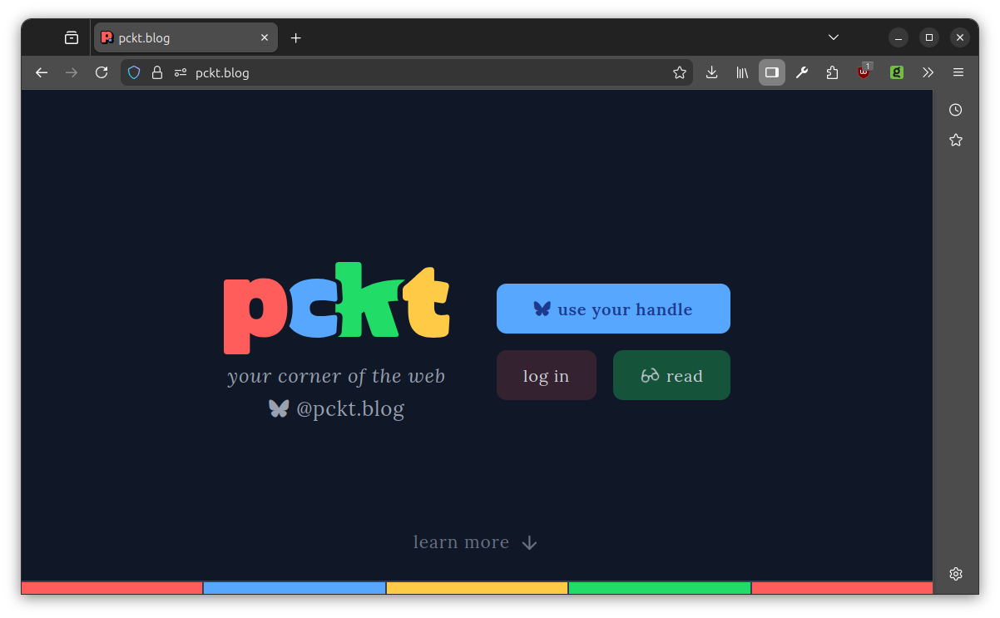
pckt.blog
この pckt が自前の PDS (Personal Data Server) を launch したらしい。
When you sign up for pckt blog, you will get the opportunity to claim a username that’s part of our pckt.cafe personal data server.
That means you will get to choose a handle like @your-name-here.pckt.cafe which will be usable to sign in across the atmosphere for apps like Bluesky, Germ Network, Stream.place, and any place built with AT Protocol.
ちょっと試してみよう。
PDS レジストリの作成
Register ページから作成できる。
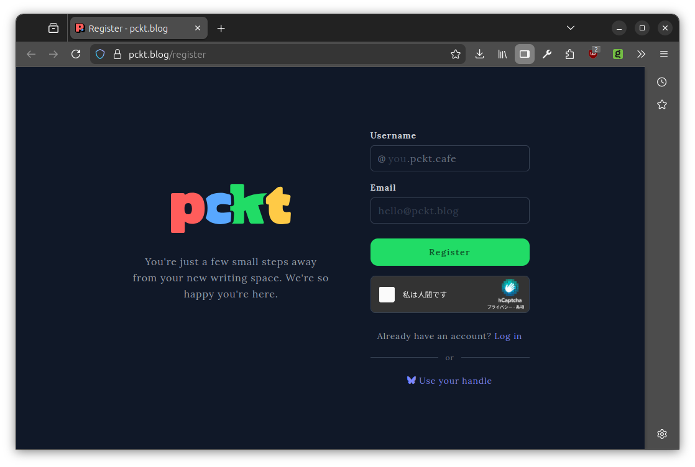
Register - pckt
入力したメールアドレスに対して確認用の URL が送られるのでので必ず実行すること。 上手く登録できるとダッシュボード画面が表示される。
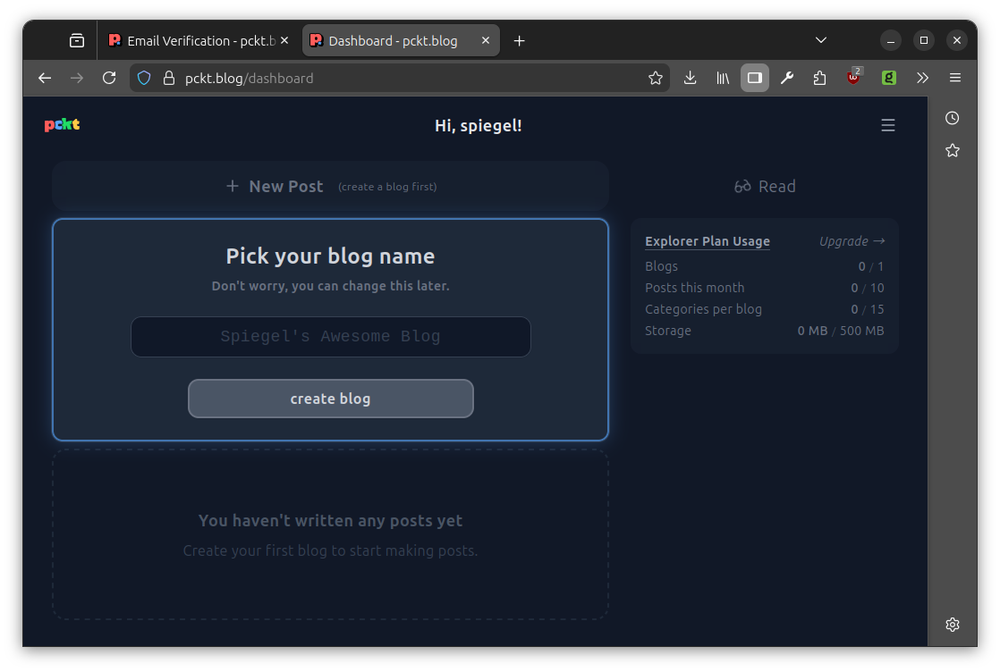
とりあえずブログ名を決めてしまおう。 入力したブログ名がサブドメイン名になるので注意。 ブログ名は後で変更できる。
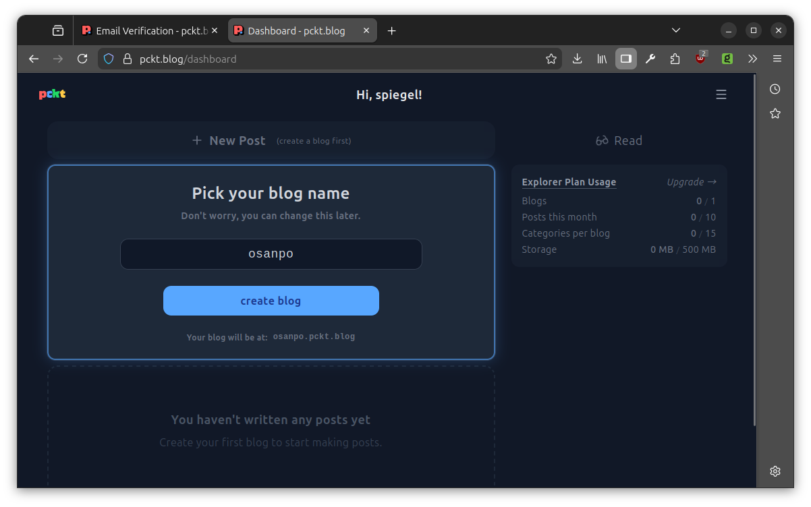
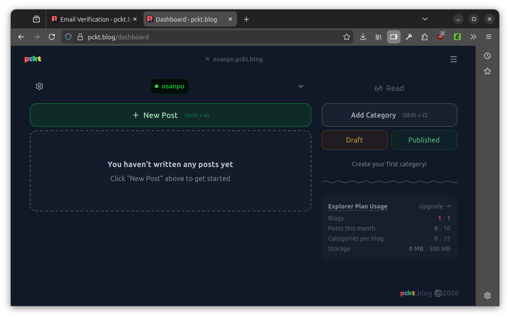
ダッシュボードの右側に注目すると，サインアップ直後では制限が大きいことが分かる。 制限内で試す分には問題ないが，本格的に利用するなら有料版にアップグレードする必要がある。
アカウント情報
ダッシュボード右上のハンバーガーメニューから “Account” を選択すると以下の画面になる。
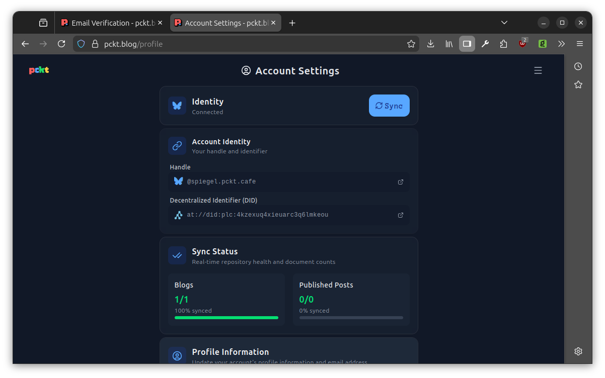
どうやら PDS レジストリを作成すると自動的に Bluesky のアカウントも作成されるようだ。
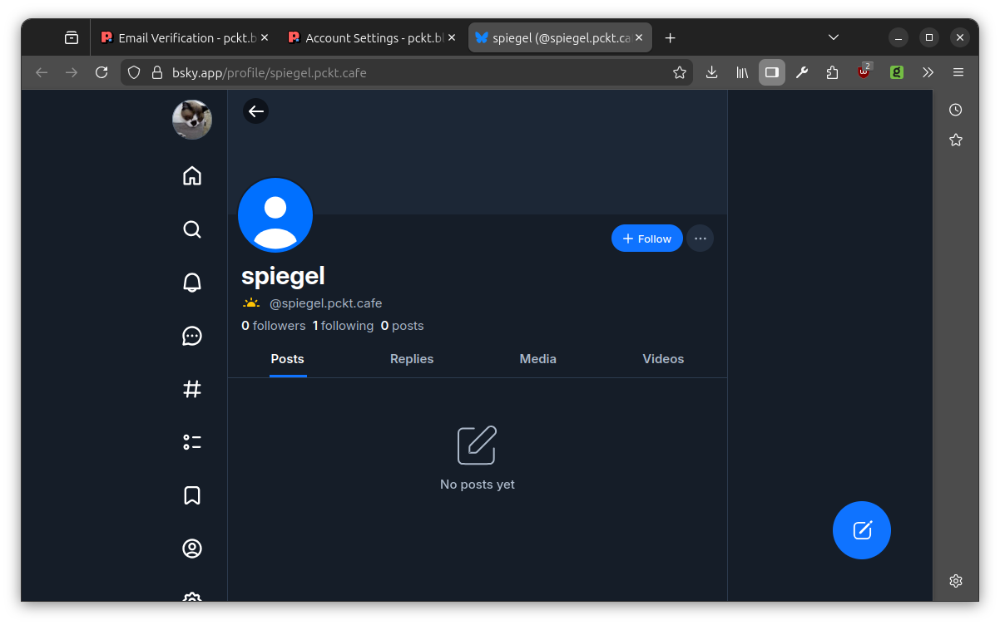
Bluesky
DID の項目から PDSls のサイトへ行ける。
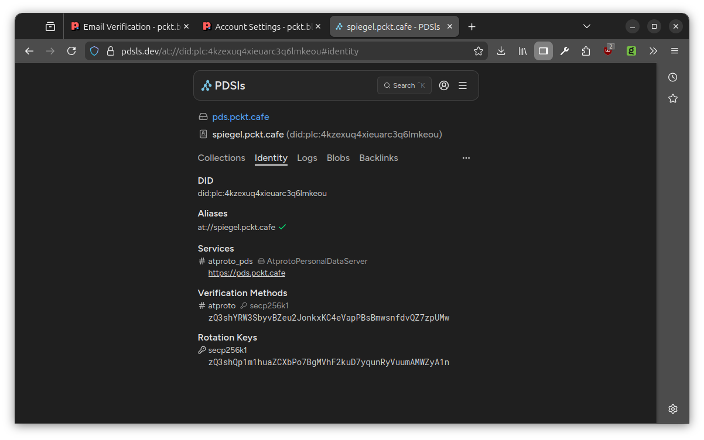
PDSls
色々と記述があるが，ここでは DID, Aliases, Services の3点のみ確認できればよい。
- DID:
did:plc:4kzexuq4xieuarc3q6lmkeou - Aliases:
at://spiegel.pckt.cafe - Services:
https://pds.pckt.cafe
折角なので，ハンドル名 spiegel.pckt.cafe を独自ドメイン名 photos.baldanders.info に変更してみる。
ハンドル名を独自ドメイン（サブドメイン）に変更する
ハンドル名にドメイン名を割り当てる方法は以下の2つがある。
- DNS の
TXTレコードに DID を設定する https://domain-name/.well-known/atproto-didに DID を設定する
そもそもユーザが DNS にアクセスできない場合は2番目の方法をとるしかない。 もうひとつ注意しないといけないのは，サブドメインをハンドル名にしたい場合だ。 今回の作業を通して具体的に説明していこう。
私は baldanders.info ドメイン以下のレコードに対してフル権限を持っているので（ぞんぞがさばる），サブドメインをいくつでも追加できるし TXT レコードも自由に追加できる。
ただし サブドメインを CNAME で設定している（例えばここのブログは GitHub Pages を利用して CNAME で独自ドメインを割り当てている）場合は1番目の方法では上手くいかないため2番目の方法をとるしかないようだ1。
既にあるサイトに /.well-known/atproto-did ファイルをセットする手もあったが，今回は CNAME レコード設定を避けて photos.baldanders.info をハンドル名とした。
こんな感じ。
{kind=link}
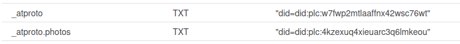
_atproto レコードは baldanders.info ドメインに対応し _atproto.photos レコードは photos.baldanders.info ドメインに対応している。
nslookup コマンドが使えるのであれば，以下のように確認できる2。
$ nslookup -q=txt _atproto.photos.baldanders.info 1.1.1.1
Server: 1.1.1.1
Address: 1.1.1.1#53
Non-authoritative answer:
_atproto.photos.baldanders.info text = "did=did:plc:4kzexuq4xieuarc3q6lmkeou"
Authoritative answers can be found from:
photos.baldanders.info ドメインをハンドル名として登録するには Bluesky の設定画面を使うとよい。
最初に spiegel.pckt.cafe で Bluesky にサインインしておいて Settings → Account → Handle で以下の画面が表示されるので “Enter the domain you want to use” の項目に photos.baldanders.info を入力する。
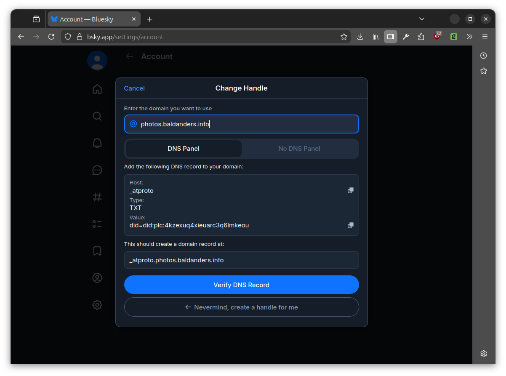
“Add the following DNS record to your domain:” の部分は（既に登録済みなので）無視してよい。
最後の “This should create a domain record at:” の部分が
_atproto.photos.baldanders.info
になっていることを確認して “Verify DNS Record” をクリックする。
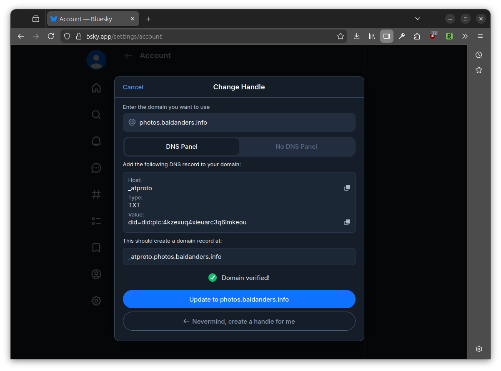
“Domain verified!” と表示されれば DNS レコードが正しく読み込まれている。 あとは “Update to photos.baldanders.info” をクリックして完了である（クリックしないと完了しない）。 完了後は新しいハンドル名でサインインし直すこと3。
pckt のほうもサインインし直してね。 以下は，最終的なアカウント情報。
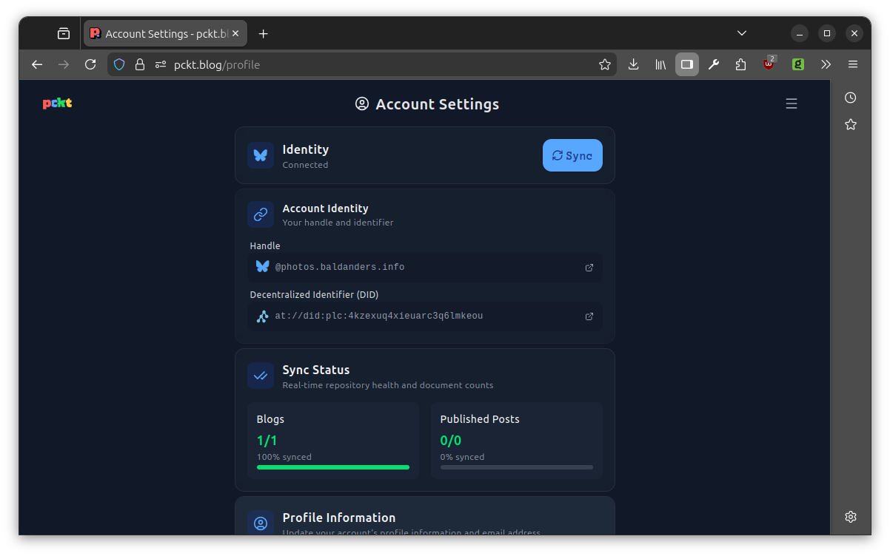
PDSls で PDS の状態を確認してみる。
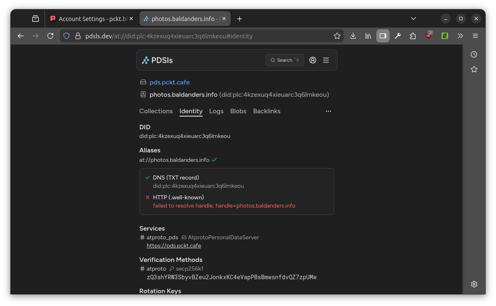
PDSls
最後に Bluesky プロフィール画面を整えておく。
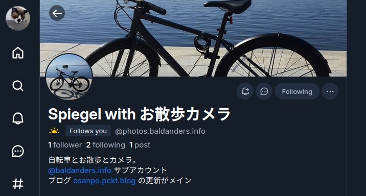
Bluesky
なにか記事を書いてみる
アカウントとハンドルについてひととおり設定ができたところで，なにか記事を書いてみる。
その前にブログのカスタマイズをしておく。 ダッシュボード右上のハンバーガーメニューから “Customize” を選択する。 今回はこんな感じにした。
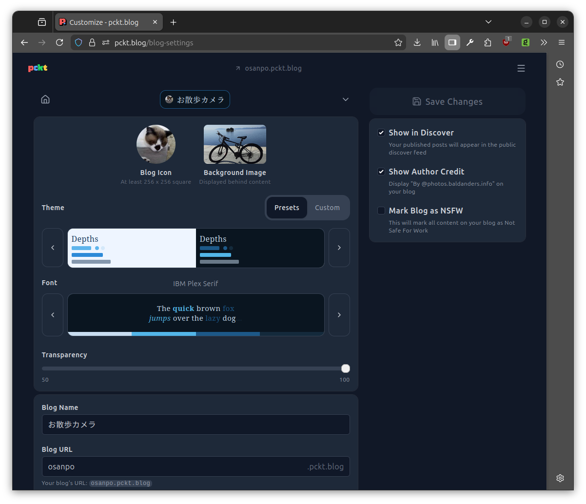
テーマはプリセットされているものから選択できる（自身でカスタマイズも可能）。 フォントもある程度選べる。 ただし日本語の場合はどれを選んでも Serif か Sans-Srif かくらいの違いしかないみたい。
ダッシュボードから “New Post” で記事を書いてみる。
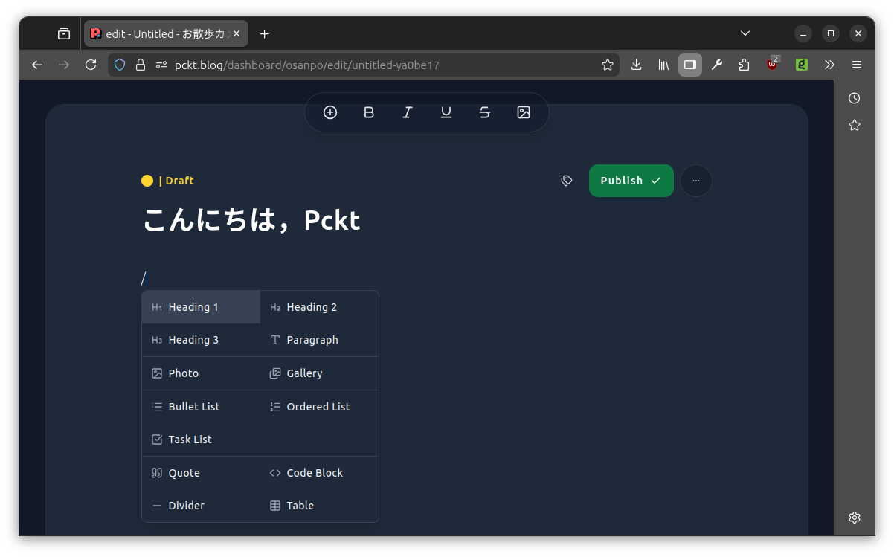
{kind=link}
編集は WYSIWYG (What You See Is What You Get) スタイルで，今どきの markdown 記法とかは使えない。
行頭に / を入力するとメニューが出てくる。
タスクリストが書けるのか。 これは嬉しい。
コードも書ける。
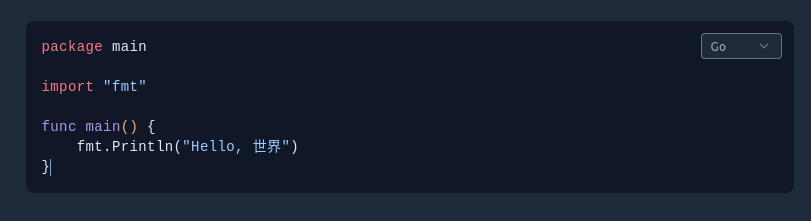
{kind=link}
テーブルも書ける。
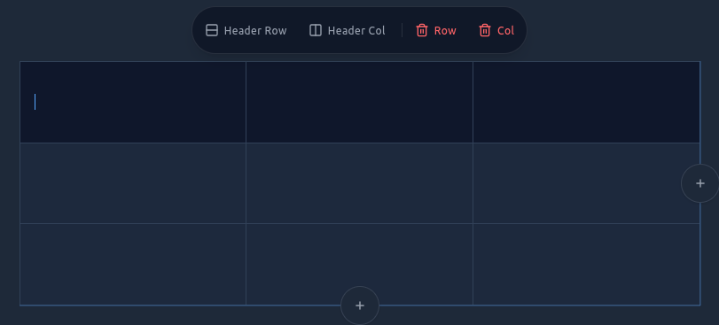
{kind=link}
文章中の文字列にハイパーリンクを仕込めない。 その代わり URL を書くとリンクカードに変換してくれる。
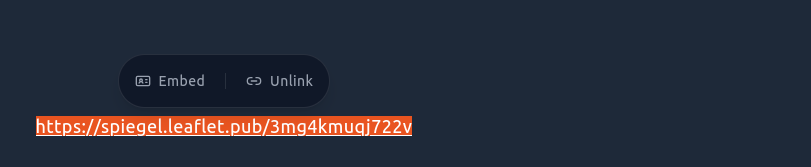
{kind=link}
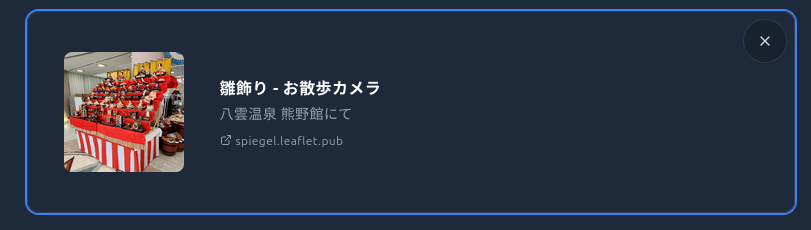
{kind=link}
数式は無理そう。
文章中の文字列にハイパーリンクを仕込めないとなると，記事の構成を工夫する必要があるかもしれない。 数式が使えないのは… 人によるか。
完成した記事はこんな感じ。
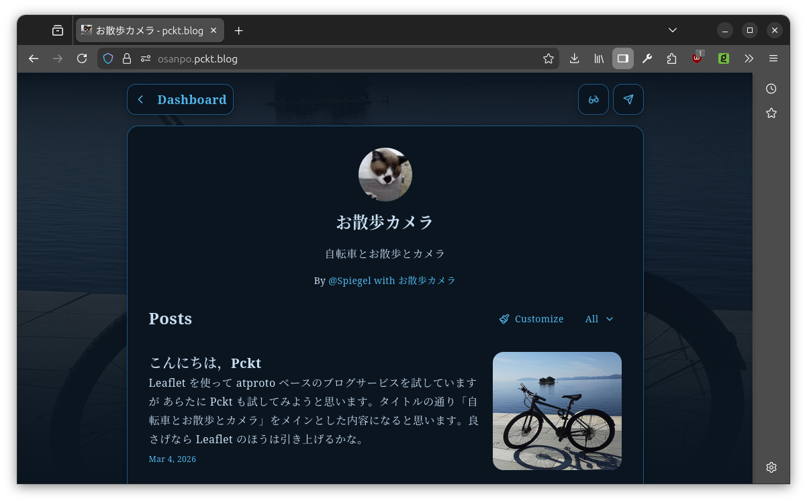
Bluesky と連動してるくせに publish と同時に Bluesky へのポストしてくれるとかはないらしい。 Bluesky へのポストは当面手動で行うか。
こんにちは，Pckt - お散歩カメラ osanpo.pckt.blog/pckt-ya0be17
— Spiegel with お散歩カメラ (@photos.baldanders.info) March 4, 2026 at 2:17 PM
[image or embed]
今日はこの辺で勘弁してやろう（笑）
-
CNAMEレコードと（TXTを含む）他のレコードとの関係がよく分かってなくて，しばらく悩んでしまった。アホである。 RFC 1912 も参照のこと。 ↩︎ -
コマンドラインにある
1.1.1.1は Cloudflare が運営するパブリック DNS リゾルバである。 ↩︎ -
サインイン時の Hosting Provider はデフォルトの Bluesky Social ではなく
pds.pckt.cafeを指定すること。ちなみに認証は OAuth である。 ↩︎